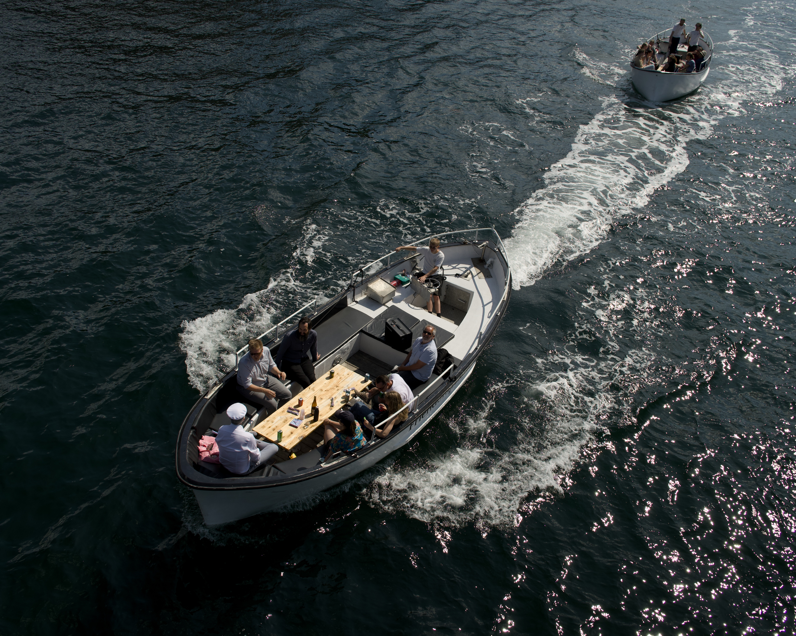

My plan for 2026
| Reading time: 4 minutes

- June 20, 2025
- Focal length: 18mm
- F-stop: 28/5
- Shutter speed: 1/320
- ISO: 160
Cruising through Copenhagen. Image: Peter van der Meulen
In late 2024, I started taking more photos. In 2025, a lot more. First with my old DSLR, and later with my new camera. The more I use my camera, the more I realise I still have a lot to learn. Here are five main things I'm hoping to practice in 2026.
(post is WIP)
What I'm listening to right now
Annabelle Dinda's lyrics are beautiful, and this song about grief is perfect for an autumn walk around Edinburgh (with or without camera).
Light
It should be obvious that understanding light is really important. It’s in the name: photography—drawing with light. I read somewhere that a good photographer should approach light the same way a painter would. I take this to mean, broadly, being intentional about where your light is, what it draws focus on, what it draws your eye to. Even outside, in natural light, you’ll need to give a bit of thought to the placements of shadows, the harshness of the light, etc. At the moment, this doesn’t come naturally to me. With any luck, this becomes more instinctive the more I practice.
Hopefully it goes without saying that not all photography has to be artistic. Most of the time you really are just taking a photo in the moment without thinking too much. And sometimes you just get lucky with the light. Probably even more so nowadays, when most people are within arm’s reach of a camera at any given moment in time. Case in point: I have hundreds of photos of my cats, none of which will ever make it into an album, much less a gallery.


However, a good photographer needs to understand light. To me, right now, this is the hardest part of photography. Most of my experience has been in fairly forgiving natural light, requiring little thought on my part about the lighting conditions. So—I need practice!
- Photos with better light?
Composition
This is a close second (or maybe a joint first with lighting) in terms of difficulty to me. It is a reflection of what I see, what I find interesting about the scene, and my ‘photographer’s eye’ needs developed. When I’m travelling, I quite easily fall into the trap of taking photos of monuments or places the same way many other tourists do: straight on, no frills, just a way to document that ‘yes, I was here.’
- Examples of bad photos?
Again, I feel like I should be thinking more like a painter or perhaps a cinematographer. For example, is there a natural background, focus point, and foreground to the scene? Can I make it more interesting by changing my angle, height, or focal length? Is my subject actually interesting in the first place? Does the photo ask questions of the viewer? Sometimes it’s better to leave certain details out of the frame!
- Examples of good photos?
Experiment
For me, to learn, it doesn’t really matter whether you shoot in manual, aperture priority, or shutter priority mode, as long as you try changing at least one setting to get different results. Get to know your camera, and get a feel for the way ISO, aperture, and shutter speed affect the final result. Experiment with different focal lengths if you have them (for example with a zoom lens, or multiple prime lenses). I’ve done a fair bit of this already:
- Examples of different settings?
In 2026, I’d like to get better at visualising the photo I want before I dial in my settings. Another thing I’d love to practice is flash photography and portraits.
Editing
So far, I’ve mostly been using Photomator for my editing.1 I sometimes use Affinity Photo as well. I’ve used a variety of other apps over the last decade or so (not least, Adobe Photoshop)!


In 2026, I’d like to create a set of saved presets in Photomator that suit my needs. Currently, I start editing each photo from scratch, and I don’t usually have a plan right from the start. Creating a set of presets will teach me some of the finer adjustments which I currently don’t often use (e.g. tone curves, selective clarity and texture, masking).
Printing
-
Photomator is a relatively lightweight alternative to Adobe Lightroom and Capture One, for example. It is built specifically for the Apple ecosystem. It integrates nicely with Apple Photos, and is much cheaper than Lightroom. A few months after I paid the yearly license, Photomator and Pixelmator were bought by Apple. I’m cautiously optimistic about what this means for the future of the app, and hopefully new features and updates get added over time. ↩︎